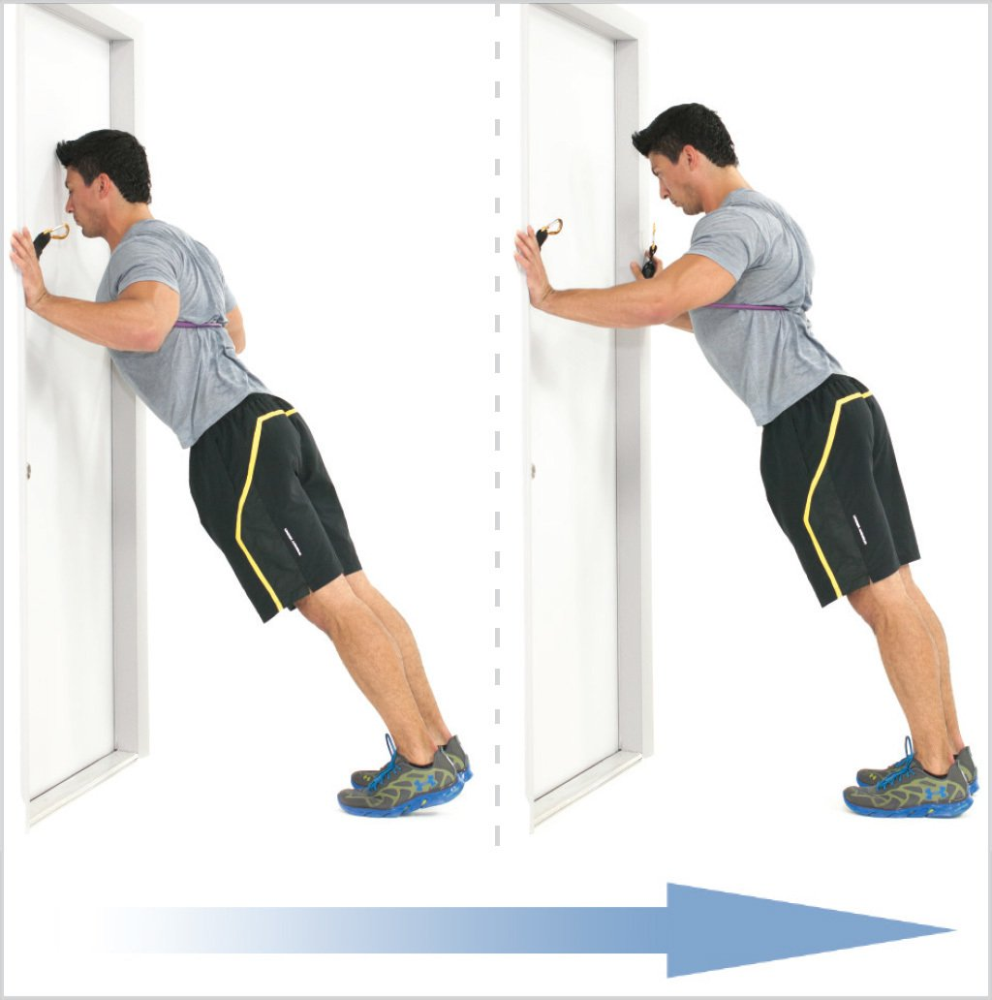

I hope everyone is doing as best as they can given the current circumstances. With gyms closed for a month now due to the Covid-19 virus, and NJ State Parks closed too, it seems to be getting harder and harder to maintain an active and healthy lifestyle.
Good news is that with a little creativity, there is still alot you can do at home. So if you were just looking for a little push or reminder, here it is. Here is a list of Mobility and Strength exercises you can do at home with ZERO pieces of equipment... well just a floor, bed, doorway and bath towel.
The Routine
Daily Mobility
Below is a Daily Mobility Routine that can be done daily. These are exercises I do throughout the course of the day. You can do them all at once, but you are free to incorporate them throughout the course of your day as you see fit.
- Cat-Cow Pose: 12 reps
- Child Pose: 30 - 90 seconds
- Lying Hamstring Stretch: 30 - 90 seconds
- Pec Stretch: 30 - 90 seconds
- Seated T-Spine Rotation: 6 reps each side
Workout Routine
The Workout Routine is a group of exercises I would reccomend doing together all at once. Everybody is going to react differently to them. Start by doing each exercise once, and then increase the number of sets as you see appropriate. After completing 1 or 2 sets of each exercise, if the next day you feel sore somewhere, let that muscle rest. Otherwise, feel free to do these exercises as often as you like, even daily.
- Glute Bridges: 12-15 reps
- Lying Leg Curls: 12-15 reps
- Dead Bug: 30 - 90 seconds
- Eccentric Squats: 12-15 reps
- Doorway Pushups: 12-15 reps
- Prone Overhead Reach: 12-15 reps
Photos and a description for each of the exercises is provided below. You can use the navigation bar at the top of the page to jump to any exercise description.
Mobility Exercises
- Cat-Cow Pose
- Child Pose
- Lying Hamstring Stretch
- Pec Stretch
- Seated T-Spine Rotation

For this stretch, it is all about moving your spine through as much of a full range of motion as possible. Sitting around leads our backs to maintain the same position all day long.
With care and control, alternate between moving your spine into each of the positions shown above, going only as far as you can comfortable. If you feel any pain, you are pushing too hard.
Move back and forth through each position slowly, focusing on controlled breathing as you hold each position for a few seconds before moving to the next one.
Here is another opportunity to get some spinal flexion, as well as some deep hip flexion in the hips
Start in a table top position on all fours and sit back, bending your knees, pushing your hips back and folding forward.
Though a band can help you pull your hamstirng into a deeper stretch, it is not required if you do not have one at home.
Simply keep both legs fully extended and lift one leg as high as you can. Focus on taking deep breaths and not jerking your leg.
Find yourself a doorway and lean in. You can also do one side at a time if you feel a better stretch that way.
Make sure to move slowly during this one, we don't want any hard jerking or twisitng.
Sit nice and tall in a chair, cross your arms, but don't slouch. Tighten your legs so as not to move the hips. Your goal is to rotate as much as you can in either direction and just breath into wherever your body takes you.
Workout Exercises
- Glute Bridges
- Lying Leg Curls
- Dead Bug
- Eccentric Squats
- Doorway Pushups 
- Prone Overhead Reach
Start off laying flat on your back, brace your core and press through your legs and feet to lift your hips into the air.
Make sure to squeeze you glutes. Take a breath on the way down and exhale when you press back up.

This time, make sure you're on a smooth enough surface so that your towel is able to slide.
You are going to perform a glute bridge like before, but instead of lowering your hips back down to the ground, exhale as you extend your knees forward, using your feet to push the towel away from you.
Inhale to pull your legs back towards you. You should feel a nice burn in your hamstrings.
You can start by only moving your legs forward a short distance, but work towards fully extending the hip by squeezing your glutes and fully extending your knees.

Now we are going to focus on some spinal stabilization. Start off by laying on your back and keep both knees bent with both legs on the floor.
Next, exhale as you lift one leg to a 90 degree position as shown above. Still keep one leg on the ground. Breathe in as you lower back down. Continue by doing the same on the opposite leg now, alternating back and forth betwen each leg. Focus on just tapping the ground gently, dont let your foot slam down.
After this position has been mastered you can do a more advanced variation where you lift both legs up as show in the photo above. From here, exhale now as you lower one leg, inhale to lift, and then exhale as you lower the other leg. Continue in this fashion.
We are going to use something like a chair (without wheels) or couch in this variation to take as much stress of the knees as possible. Keep in mind our focus on this exercise is to work the muscles in the leg. Stop immediately if after following the below instructions you feel stress in the knees or lower back.
Extend your arms forward and reach your hips back to slowly lower towards your seat. You may need to experiment with finding the right height, as you want to maintain control and balance as you descend down. You don't want to fall into you seated position.
The goal is to descend down as slowly as possible. Focusing on this eccentric range of motion slowly and with control is the best way to strengthen the muscles. Tap your seat gently, and then stand up tall, drivng through the legs and squeezing your glutes.
Find a safe and stable doorway to do some pushups. Set up nice and tall in a plank position and lean forward. Lower yourself through the doorway like you would during a push up and then press back to the top.
This is a great workout for the shoulders and upper back, and it is okay if you can only do a few repetitions at first. Start by laying flat on your stomach. If this position is uncomfortable on the floor, you can also perform this by laying on something softer like a bed.
Tuck your chin so you are nice and tall. Lift your head off of the floor and reach you arms forward as shown in the photo above. Next, pull your arms back down as if doing a lat pulldown.
A good way to envision the next part of this motion is to pretend your holding a single bar in both hands. Reach your arms forward, lifting the bar overhead. Then, bring the bar behind your head as you squeeze your shoudler blades and lats. Repeat this motion.